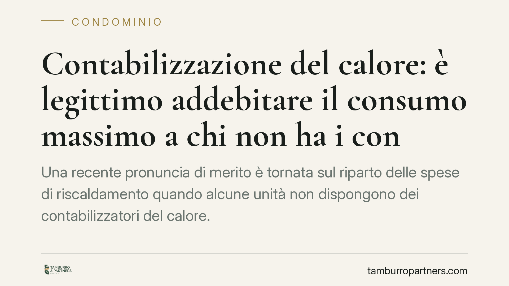
Contabilizzazione del calore: è legittimo addebitare il "consumo massimo" a chi non ha i contatori?
Una recente pronuncia di merito è tornata sul riparto delle spese di riscaldamento quando alcune unità non dispongono dei contabilizzatori del calore. In discussione la prassi di a…
Quota 100 e cumulo redditi: la Cassazione ridimensiona il recupero INPS
Una pensionata percepisce pochi euro da lavoro e l'INPS le chiede indietro un'intera annualità di pensione. La Corte di Cassazione, Sezione Lavoro, interviene sul divieto di cumulo…
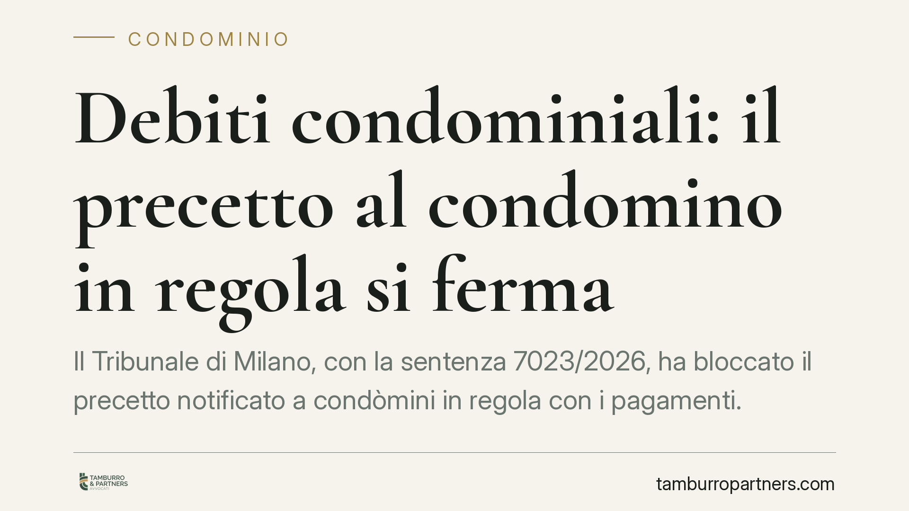
Debiti condominiali: il precetto al condomino in regola si ferma
Il Tribunale di Milano, con la sentenza 7023/2026, ha bloccato il precetto notificato a condòmini in regola con i pagamenti. Il creditore del condominio non può rivolgersi a chi ha…
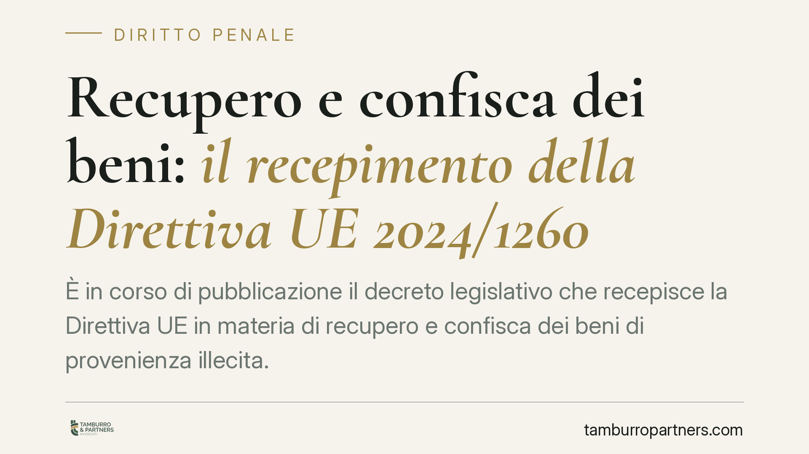
Recupero e confisca dei beni: il recepimento della Direttiva UE 2024/1260
È in corso di pubblicazione il decreto legislativo che recepisce la Direttiva UE in materia di recupero e confisca dei beni di provenienza illecita. Numero e data vanno confermati …
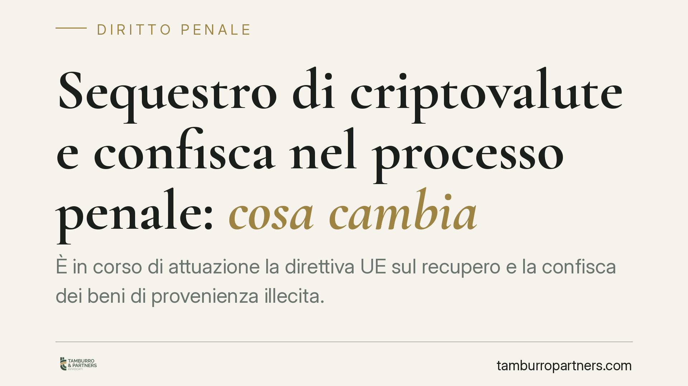
Sequestro di criptovalute e confisca nel processo penale: cosa cambia
È in corso di attuazione la direttiva UE sul recupero e la confisca dei beni di provenienza illecita. Le nuove regole rafforzano i poteri investigativi del pubblico ministero e del…
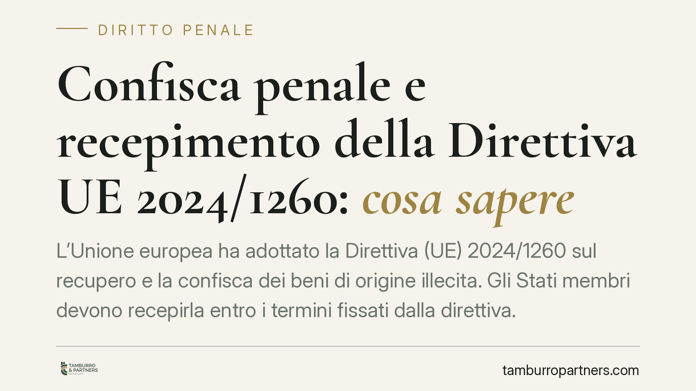
Confisca penale e recepimento della Direttiva UE 2024/1260: cosa sapere
L'Unione europea ha adottato la Direttiva (UE) 2024/1260 sul recupero e la confisca dei beni di origine illecita. Gli Stati membri devono recepirla entro i termini fissati dalla di…
Consegna di assegni e prova dell'incasso: a chi spetta?
Chi salda un debito consegnando assegni poi accettati dal creditore può considerarsi liberato, anche senza dimostrarne l'avvenuto incasso. Un recente orientamento della Cassazione …
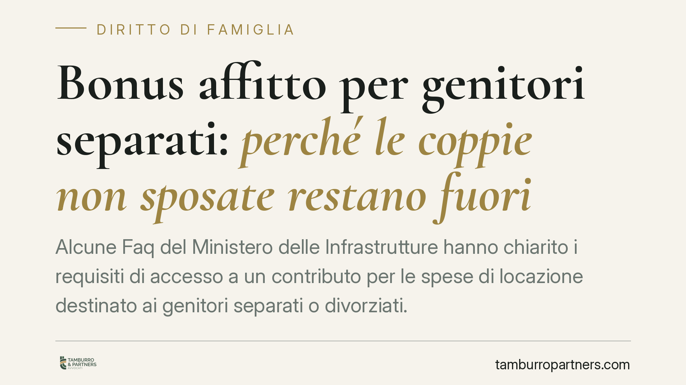
Bonus affitto per genitori separati: perché le coppie non sposate restano fuori
Alcune Faq del Ministero delle Infrastrutture hanno chiarito i requisiti di accesso a un contributo per le spese di locazione destinato ai genitori separati o divorziati. Il punto …
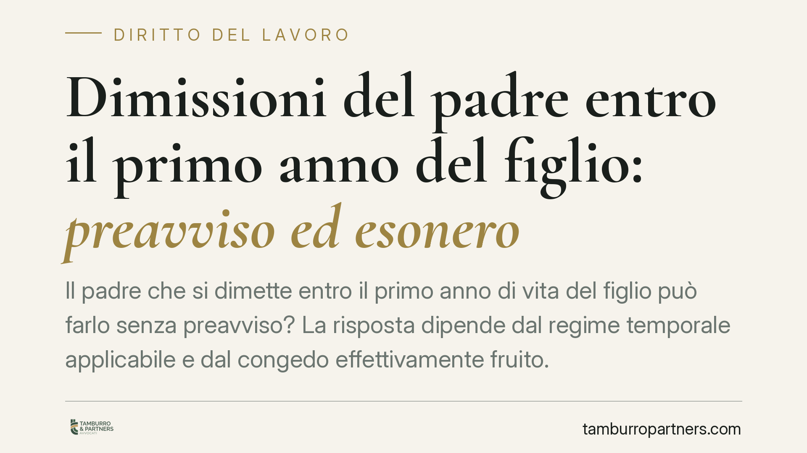
Dimissioni del padre entro il primo anno del figlio: preavviso ed esonero
Il padre che si dimette entro il primo anno di vita del figlio può farlo senza preavviso? La risposta dipende dal regime temporale applicabile e dal congedo effettivamente fruito. …
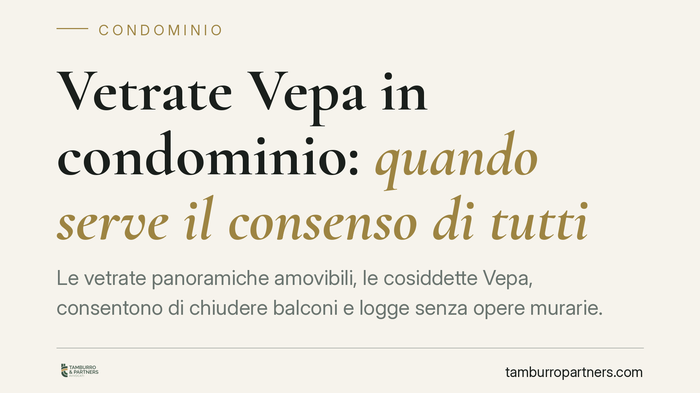
Vetrate Vepa in condominio: quando serve il consenso di tutti
Le vetrate panoramiche amovibili, le cosiddette Vepa, consentono di chiudere balconi e logge senza opere murarie. Rientrano nell'edilizia libera, ma questo non basta a metterle al …
Maltrattamenti in famiglia e violenza assistita: quando scatta l'aggravante per i minori
Una recente pronuncia della Corte d'Appello di Ancona (sent. 112/2026) ribadisce due principi: il reato di maltrattamenti in famiglia sussiste indipendentemente dalla capacità di r…
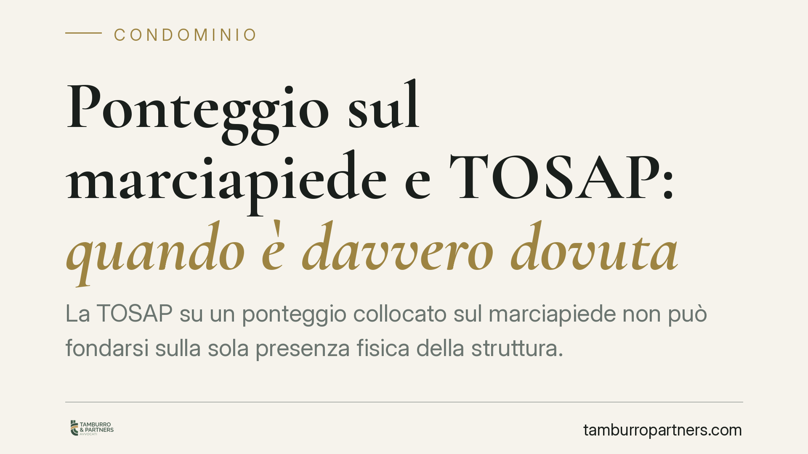
Ponteggio sul marciapiede e TOSAP: quando è davvero dovuta
La TOSAP su un ponteggio collocato sul marciapiede non può fondarsi sulla sola presenza fisica della struttura. Secondo l'orientamento della Cassazione, occorre verificare se e qua…
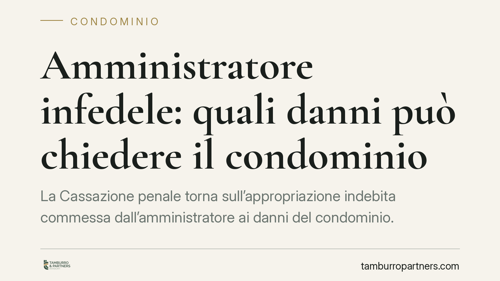
Amministratore infedele: quali danni può chiedere il condominio
La Cassazione penale torna sull'appropriazione indebita commessa dall'amministratore ai danni del condominio. Oltre alla restituzione delle quote sottratte, i giudici ammettono il …
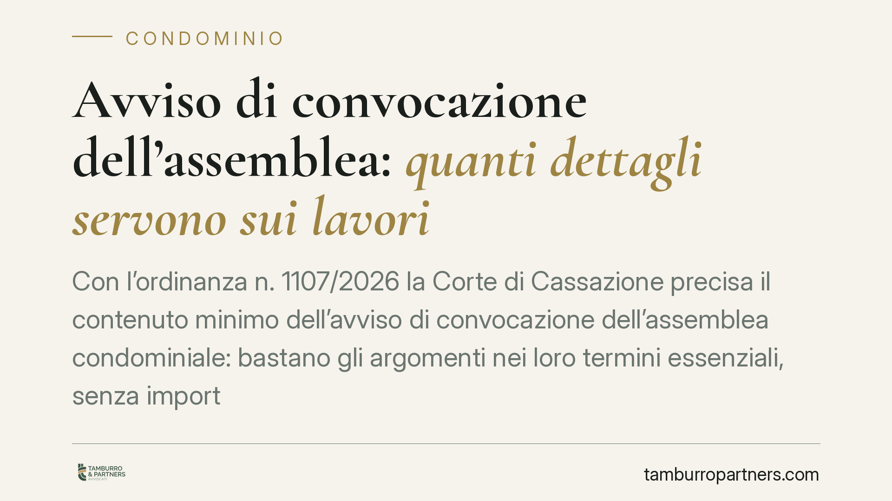
Avviso di convocazione dell'assemblea: quanti dettagli servono sui lavori
Con l'ordinanza n. 1107/2026 la Corte di Cassazione precisa il contenuto minimo dell'avviso di convocazione dell'assemblea condominiale: bastano gli argomenti nei loro termini esse…
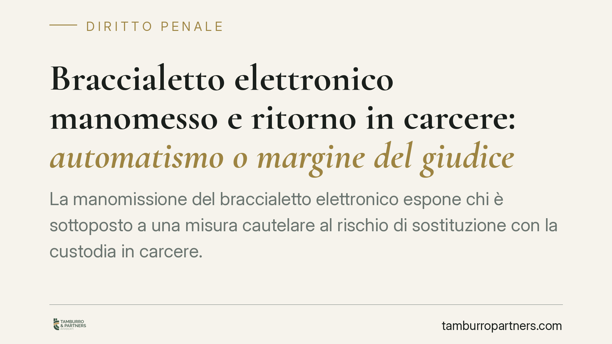
Braccialetto elettronico manomesso e ritorno in carcere: automatismo o margine del giudice?
La manomissione del braccialetto elettronico espone chi è sottoposto a una misura cautelare al rischio di sostituzione con la custodia in carcere. Il nodo giuridico è se tale esito…
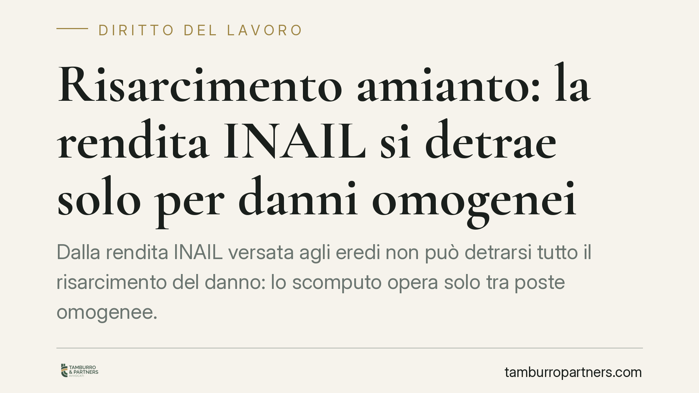
Risarcimento amianto: la rendita INAIL si detrae solo per danni omogenei
Dalla rendita INAIL versata agli eredi non può detrarsi tutto il risarcimento del danno: lo scomputo opera solo tra poste omogenee. Un principio consolidato dalle Sezioni Unite del…

Reati patrimoniali tra familiari: l'immunità dell'art. 649 c.p. sotto esame
L'art. 649 del codice penale esclude la punibilità di alcuni reati patrimoniali commessi tra stretti familiari. Si discute se questa immunità sia ancora compatibile con la tutela d…

Assegno di divorzio compensativo: rilevano il sacrificio professionale e le fideiussioni
Una recente pronuncia della Corte di Cassazione conferma l'assegno di divorzio in favore della moglie che ha sacrificato la propria carriera e sottoscritto fideiussioni per l'impre…

Concessione abusiva di credito: il contratto è nullo o la banca risponde dei danni?
La banca che finanzia un'impresa già insolvente espone sé stessa a responsabilità verso i creditori, ma il contratto resta valido. Una recente pronuncia del Tribunale di Milano tor…

Dichiarazioni spontanee alla polizia giudiziaria: quando non sono utilizzabili
Le dichiarazioni che l'indagato rende di propria iniziativa alla polizia giudiziaria hanno un regime processuale rigoroso. Secondo un orientamento di legittimità ribadito di recent…

Imprese artigiane impiantistiche e limiti dimensionali INPS: cosa cambia
Le imprese artigiane che installano impianti pongono da tempo un problema pratico: dove collocare la soglia di dipendenti oltre la quale si perde la qualifica artigiana. La questio…

Divieto di cumulo Quota 100 e lavoro: cosa si restituisce in caso di violazione
Il pensionato con Quota 100 che lavora viola il divieto di cumulo e deve restituire quanto percepito indebitamente. Un orientamento giurisprudenziale punta a limitare la restituzio…

Infiltrazioni dal lastrico solare: il condominio deve intervenire anche senza fondi
Il Tribunale di Napoli ha stabilito che il condominio deve eseguire d'urgenza i lavori di riparazione delle infiltrazioni provenienti dal lastrico solare anche quando non dispone d…

Delibera condominiale nulla: chi ha votato a favore può impugnarla?
Chi ha votato a favore di una delibera condominiale può poi contestarla? Dipende dal vizio. Se la delibera è solo annullabile, il voto favorevole chiude la porta. Se è nulla, la le…

Mediazione obbligatoria: gli errori che rendono improcedibile la domanda
Alcune pronunce del 2026 ricordano quanto sia fragile la condizione di procedibilità legata alla mediazione obbligatoria. Oggetto della mediazione non coincidente con la citazione,…

Parti comuni tra edifici autonomi: condominio orizzontale e supercondominio
La comunione di beni non presuppone un unico fabbricato. Anche tra edifici autonomi possono esistere parti comuni, dando luogo al condominio orizzontale o al supercondominio. Un re…

Bonus affitto per genitori separati: come la quota ereditata può escludere dal contributo
Si parla di un nuovo fondo per aiutare i genitori separati o divorziati che, non avendo l'assegnazione della casa familiare, devono sostenere un affitto. I dettagli operativi circo…

Difesa delle parti comuni: cosa deve provare il condominio
Quando il condominio agisce per difendere una parte comune, deve dimostrarne la proprietà con un titolo? La Cassazione, con l'ordinanza n. 16886 del 24 giugno 2025, risponde di no:…

Cortile che copre i garage: chi paga il rifacimento
Quando il cortile condominiale copre i box sottostanti, il rifacimento non grava su tutti allo stesso modo. Un orientamento della Corte di Cassazione applica per analogia l'art. 11…

Bonus affitto per genitori separati: chi resta escluso dal contributo
È operativo il contributo destinato ai genitori separati o divorziati non assegnatari della casa familiare, con domande da presentare entro il termine fissato. Le Faq ministeriali …